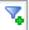
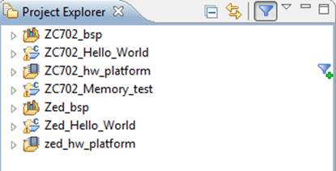
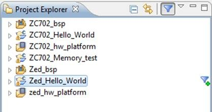
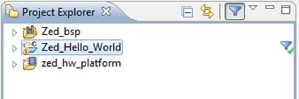
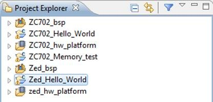

Project Filtering
You can filter all related projects in the Project Explorer using the Project Filtering feature.
Enabling Project Filtering
To filter the related projects, in the Project Explorer, click the Project Filtering button to toggle it on.
Once the filtering is enabled, whenever you hover the mouse on the projects, the

icon appears.

Example 1
Using the figure above for reference, to filter the projects that are related to the ZC702_hw_platform project, you would click the icon. SDK displays all projects related to the ZC702_hw_platform project.

To remove the project filter, click . SDK displays all projects.
Example 2

If you are working on the Zed_Hello_World project and you want to see the projects that are related to it, click the icon next to Zed_Hello_World project.

Disabling Project Filtering
To disable the Project Filter option, click the icon in the Project Explorer to toggle it off.

Copyright © 1995-2013 Xilinx,
Inc. All rights reserved.